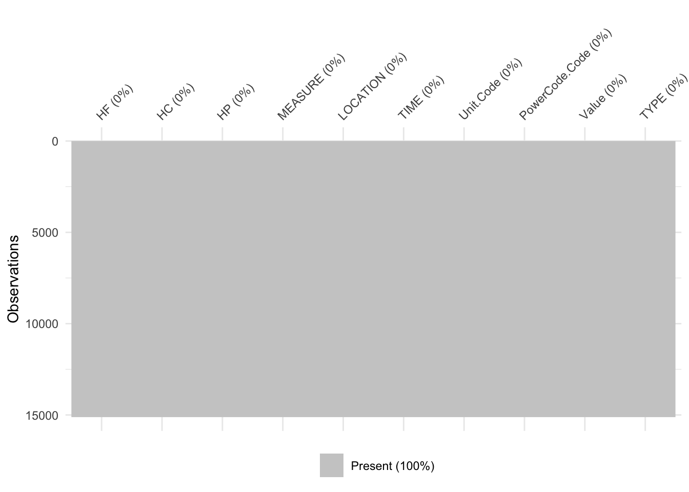

Chapter 4 Missing values
In this part, we want to explore whether there is any missing value pattern in the dataset.
Firstly, calculating the number of data missing by sum(is.na()), the result is 0, which means that there is no missing value in this dataset.

In the plot above, there is no black color block that represents for data missing, which also indicates that there is no missing value in the dataset.